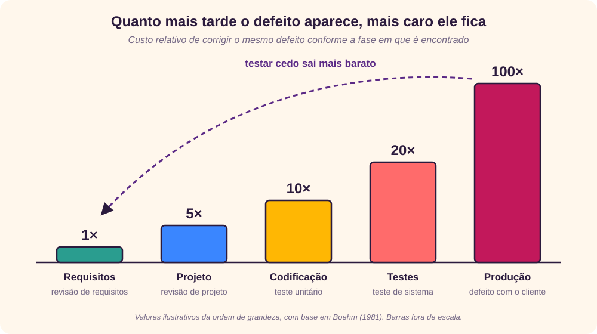
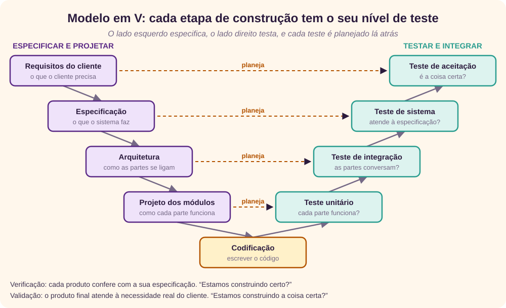
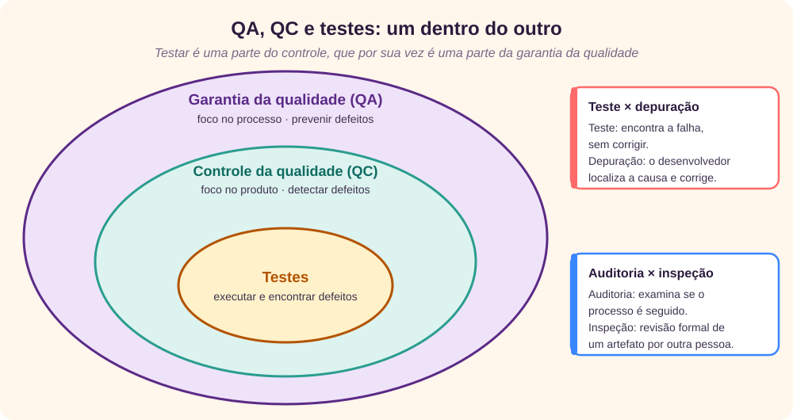
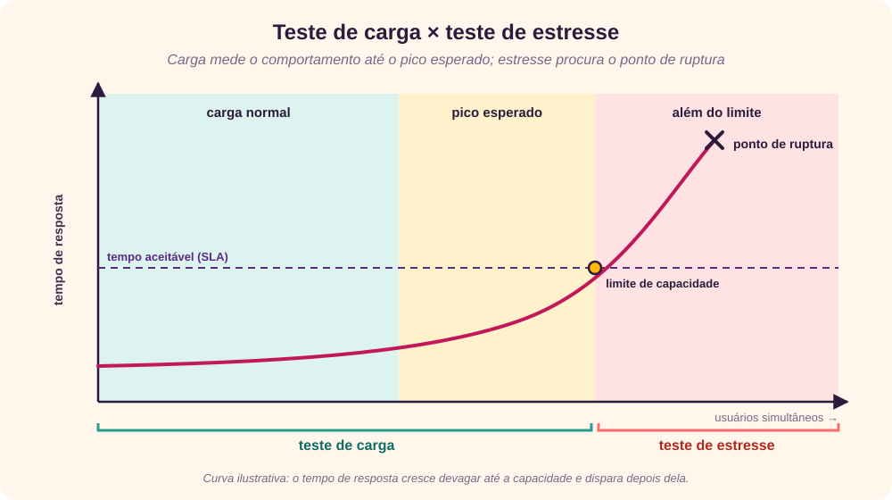
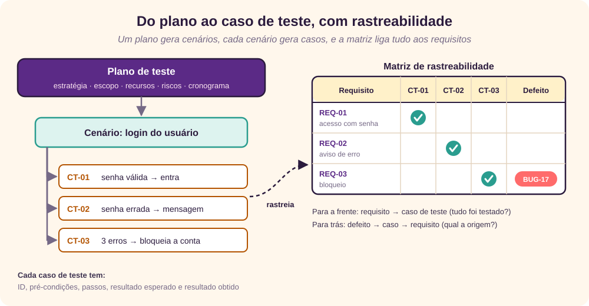

O que é testar
Testar é avaliar um sistema, ou parte dele, para descobrir se ele atende aos requisitos especificados. Em outras palavras, é executar o software para encontrar lacunas, erros ou requisitos que faltam em relação ao que foi pedido. [1] [2]
A norma ANSI/IEEE 1059 define teste como o processo de analisar um item de software para detectar as diferenças entre as condições existentes e as exigidas, ou seja, os defeitos, e para avaliar as características desse item. [2] Glenford Myers resume a atitude certa numa frase: testar é executar um programa com a intenção de encontrar erros, e não para provar que ele funciona. [7]
Três palavras aparecem o tempo todo e vale separá-las desde já, como faz o glossário do ISTQB: [3]
- Erro (engano): a ação humana que produz um resultado incorreto, como interpretar mal um requisito.
- Defeito (bug): a imperfeição que esse erro deixa no código ou em um documento.
- Falha: o comportamento errado que aparece quando o código com defeito é executado.
Quem testa
Depende do processo e das pessoas envolvidas no projeto. Empresas maiores costumam ter uma equipe dedicada a avaliar o software diante dos requisitos, mas os desenvolvedores também testam: o teste que fazem no próprio código é o teste unitário. Em geral participam:
- testadores e analistas de qualidade (QA);
- desenvolvedores;
- líderes e gerentes de projeto;
- usuários finais.
Os cargos variam de empresa para empresa: testador, engenheiro de qualidade de software, analista de QA e outros.
Quando começar e quando parar
Comece o mais cedo possível
Começar cedo reduz o custo e o tempo de retrabalho. No ciclo de vida de desenvolvimento (SDLC), o teste pode começar já no levantamento de requisitos e seguir até a implantação. Barry Boehm mostrou que um defeito fica muito mais caro de corrigir quanto mais tarde é descoberto: o que se resolve com uma conversa na fase de requisitos pode exigir retrabalho em várias camadas quando aparece em produção. [5]

O momento também depende do modelo de desenvolvimento. No modelo cascata, o teste formal acontece na fase de testes; no modelo incremental, ao fim de cada iteração, e a aplicação inteira é testada no final. Em qualquer modelo, o teste aparece em formas diferentes ao longo do ciclo:
- na fase de requisitos, analisar e verificar os requisitos já é testar;
- na fase de projeto, revisar o desenho para melhorá-lo também é testar;
- ao terminar o código, o teste do desenvolvedor faz parte do processo.
Saiba quando parar
Nenhum software pode ser dado como 100% testado, por isso o teste nunca “acaba” de verdade. Como escreveu Edsger Dijkstra:
O teste de programas pode ser usado para mostrar a presença de bugs, mas nunca para mostrar a sua ausência.
Edsger W. Dijkstra, 1970 [6]
Na prática, decide-se parar com base em critérios combinados antes, os chamados critérios de saída:
- prazo de testes atingido;
- execução completa dos casos de teste planejados;
- cobertura funcional e de código acima de um patamar definido;
- taxa de defeitos abaixo de um limite e nenhum defeito de alta prioridade em aberto;
- decisão da gestão, com os riscos conhecidos.
Verificação e validação
Os dois termos costumam ser usados como sinônimos, mas respondem a perguntas diferentes. [8]
| Verificação | Validação |
|---|---|
| Responde: “estamos construindo certo?” | Responde: “estamos construindo a coisa certa?” |
| Confere se cada produto atende à sua especificação. | Confere se o produto atende à necessidade real e ao uso pretendido. |
| Vem primeiro e examina documentos, projeto e código. | Vem depois e examina o produto como um todo. |
| Envolve mais analistas e desenvolvedores. | Envolve mais testadores, clientes e usuários. |
| Atividades estáticas: revisões, walkthroughs e inspeções. | Atividades dinâmicas: executar o software diante dos requisitos. |
| Processo objetivo: conforme ou não conforme. | Processo com julgamento: quão bem o software atende. |
O modelo em V junta as duas ideias: cada etapa de especificação, no lado esquerdo, tem um nível de teste correspondente, no lado direito, planejado desde cedo. [9]

Mitos sobre testes
Algumas crenças sobre testes são tão repetidas que parecem verdade. Estas são as mais comuns, e o que acontece na realidade. [2]
“Testar é caro demais”
Realidade: ou se paga pouco para testar durante o desenvolvimento, ou se paga muito para corrigir depois. Cortar testes para economizar costuma sair mais caro.
“Testar toma tempo demais”
Realidade: o que consome tempo é diagnosticar e corrigir os defeitos encontrados, e esse tempo é produtivo.
“Só se testa o produto pronto”
Realidade: revisar requisitos e escrever casos de teste não depende do código. Modelos iterativos reduzem ainda mais essa dependência.
“É possível testar tudo”
Realidade: o número de combinações de entradas e caminhos é grande demais. Sempre haverá cenários que só aparecem em produção. [6]
“Software testado não tem bugs”
Realidade: ninguém pode garantir que um software está 100% livre de defeitos, por melhor que seja o testador.
“Defeito que escapou é culpa do testador”
Realidade: prazos, custos e requisitos que mudam pesam tanto quanto a estratégia de teste escolhida.
“Qualidade é problema do testador”
Realidade: o testador informa os defeitos; a decisão de corrigir ou lançar é dos responsáveis pelo produto. Qualidade é do time todo.
“Automatize tudo o que der”
Realidade: a automação economiza tempo, mas só compensa quando o software já está estável. Com requisitos mudando toda hora, o custo de manter os scripts dispara.
“Qualquer um pode testar”
Realidade: pensar em cenários alternativos e tentar quebrar o software exige técnica e criatividade. E quem escreveu o código é quem tem mais dificuldade de enxergar os próprios erros. [7]
“Testador só acha bugs”
Realidade: o testador conhece o sistema de ponta a ponta, as dependências e o impacto de um módulo sobre o outro, e isso o torna um especialista no domínio.
QA, QC e testes
Garantia da qualidade (QA), controle da qualidade (QC) e testes estão ligados, mas não são a mesma coisa. Uma forma simples de lembrar é pensar em círculos, um dentro do outro. [3]

| Garantia da qualidade (QA) | Controle da qualidade (QC) | Testes |
|---|---|---|
| Garante que processos, procedimentos e padrões sejam seguidos. | Verifica o software desenvolvido diante dos requisitos. | Identifica defeitos no software. |
| Foco no processo. | Foco no produto. | Foco no produto. |
| Preventiva. | Corretiva. | Detecta para que se possa corrigir. |
| Abrange todo o ciclo. | É um subconjunto da QA. | É um subconjunto do QC. |
Auditoria e inspeção
Auditoria é um exame sistemático e, em geral, independente de como o processo de teste é conduzido numa organização. Pelo IEEE, é a revisão dos processos documentados que a organização diz seguir. Pode ser de conformidade legal, interna ou de sistema.
Inspeção é uma técnica formal em que requisitos, projeto ou código são examinados em detalhe por pessoas que não são o autor, para encontrar defeitos e desvios de padrão. Uma inspeção formal tem planejamento, apresentação, preparação, reunião de inspeção, retrabalho e acompanhamento.
Teste e depuração
Teste identifica o defeito sem corrigi-lo. Depuração (debugging) é o trabalho do desenvolvedor de localizar a causa, isolá-la e corrigi-la. A depuração acontece durante o teste unitário ou quando se corrigem os defeitos relatados.
Normas ISO e IEEE
Várias normas ajudam a definir e medir a qualidade do software. Algumas das citadas com frequência já foram substituídas; as notas abaixo indicam a referência atual quando é o caso.
Modelos de qualidade
- ISO/IEC 9126 definia um modelo de qualidade com seis características: funcionalidade, confiabilidade, usabilidade, eficiência, manutenibilidade e portabilidade. Foi substituída pela ISO/IEC 25010, que amplia o modelo e inclui, por exemplo, segurança e compatibilidade. [10]
- ISO/IEC 25000 (SQuaRE) organiza os requisitos e a avaliação da qualidade de software em divisões: gestão (2500n), modelo (2501n), medição (2502n), requisitos (2503n) e avaliação (2504n). Ela substituiu a ISO/IEC 9126 e a ISO/IEC 14598. [10]
- ISO 9241-11 define usabilidade como a medida em que um produto pode ser usado por certos usuários para atingir certos objetivos com eficácia, eficiência e satisfação, num contexto de uso específico. [11]
- ISO/IEC 12119 tratava de requisitos e de testes para pacotes de software entregues ao cliente. Hoje o tema está na ISO/IEC 25051.
Normas de processo e documentação
| Norma | Assunto | Observação |
|---|---|---|
| IEEE 829 | Documentos usados nas etapas de teste | Substituída pela ISO/IEC/IEEE 29119-3 [4] |
| IEEE 1008 | Teste unitário | Absorvida pela série ISO/IEC/IEEE 29119 [4] |
| BS 7925-1 e 7925-2 | Vocabulário de teste e teste de componentes | Absorvidas pela série ISO/IEC/IEEE 29119 [4] |
| IEEE 1012 | Verificação e validação de sistemas e software | — |
| IEEE 1059 | Guia para planos de verificação e validação | — |
| IEEE 1028 | Revisões e inspeções de software | — |
| IEEE 1044 | Classificação de anomalias de software | A edição de 2009 incorporou o guia 1044.1 |
| IEEE 830 | Especificação de requisitos de software | Substituída pela ISO/IEC/IEEE 29148 |
| IEEE 730 | Planos de garantia da qualidade de software | — |
| IEEE 1061 | Metodologia de métricas de qualidade de software | — |
| ISO/IEC/IEEE 12207 | Processos do ciclo de vida do software | — |
Para quem está começando, a série ISO/IEC/IEEE 29119 é o melhor ponto de partida: reúne conceitos, processos, documentação e técnicas de teste num só lugar. [4]
Teste manual e automatizado
Teste manual
No teste manual, o testador faz o papel do usuário final e usa o software sem scripts nem ferramentas de automação, procurando comportamentos inesperados. Ele segue planos, casos e cenários de teste para garantir a cobertura, e também pratica o teste exploratório: aprende sobre o sistema enquanto testa e decide o próximo passo com base no que acabou de ver.
Teste automatizado
Na automação, o testador escreve scripts e usa outro software para testar o produto. O ganho maior é repetir rápido e muitas vezes os mesmos cenários, como na regressão, e simular carga com muitos usuários. A automação aumenta a cobertura e a precisão e economiza tempo em relação ao teste manual repetitivo.
O que automatizar: fluxos críticos e muito usados, como login e cadastro; áreas acessadas por muitos usuários ao mesmo tempo; validações de campos; e integrações com banco de dados. Martin Fowler sugere a pirâmide de testes: muitos testes unitários, rápidos e baratos, na base; menos testes de serviço no meio; e poucos testes pela interface gráfica no topo, que são lentos e frágeis. [12]
Quando automatizar:
- projetos grandes e críticos;
- áreas que precisam ser testadas com frequência;
- requisitos que não mudam o tempo todo;
- testes de carga e desempenho com muitos usuários virtuais;
- software já estável no teste manual;
- tempo disponível para criar e manter os scripts.
Como automatizar, passo a passo:
- identificar as áreas do software a automatizar;
- escolher a ferramenta adequada;
- escrever os scripts de teste;
- montar as suítes de teste;
- executar os scripts;
- gerar os relatórios de resultado;
- analisar os defeitos e problemas de desempenho encontrados.
Ferramentas
O texto original cita ferramentas clássicas como HP QuickTest Professional (hoje OpenText UFT), IBM Rational Functional Tester, SilkTest, TestComplete, WinRunner, LoadRunner, Visual Studio Test Professional e Watir. Hoje são muito usadas ferramentas abertas como Selenium e Playwright, para interface web, e Apache JMeter, para carga. [15]
Métodos: caixa preta, cinza e branca
Os métodos se diferenciam pelo quanto o testador conhece do funcionamento interno da aplicação. [7]
Caixa preta
O testador não conhece a arquitetura nem tem acesso ao código. Ele interage pela interface, fornece entradas e examina as saídas, sem saber como elas são processadas.
- Vantagens: serve bem para grandes volumes de código; não exige acesso ao código; separa a visão do usuário da visão do desenvolvedor; permite que muitos testadores, sem conhecer a linguagem ou a plataforma, testem a aplicação.
- Desvantagens: cobertura limitada aos cenários escolhidos; cobertura “às cegas”, sem mirar trechos de código mais sujeitos a erro; casos de teste difíceis de projetar sem uma boa especificação.
Caixa branca
Também chamada de caixa de vidro ou caixa aberta, é a investigação detalhada da lógica e da estrutura do código. O testador precisa olhar o código para descobrir qual trecho se comporta mal.
- Vantagens: facilita escolher os dados de teste mais eficazes; ajuda a otimizar o código e a remover linhas que escondem defeitos; permite cobertura máxima dos caminhos.
- Desvantagens: exige testadores com conhecimento técnico, o que aumenta o custo; é impossível percorrer todos os caminhos; depende de ferramentas especializadas, como analisadores de código e depuradores.
Caixa cinza
O testador tem conhecimento parcial do interior: acesso a documentos de projeto e ao banco de dados, mas não ao código. Com isso prepara dados e cenários melhores, principalmente em integrações, protocolos de comunicação e tipos de dados.
Comparação
| Caixa preta | Caixa cinza | Caixa branca | |
|---|---|---|---|
| Conhecimento interno | Nenhum | Parcial | Total |
| Outros nomes | Caixa fechada, funcional, orientado a dados | Translúcido | Caixa clara, estrutural, baseado em código |
| Quem faz | Usuários, testadores e desenvolvedores | Usuários, testadores e desenvolvedores | Testadores e desenvolvedores |
| Base do teste | Expectativas externas | Diagramas de banco e de fluxo de dados | Estrutura interna do código |
| Esforço | O menos exaustivo e o mais rápido | Intermediário | O mais exaustivo e demorado |
| Testar algoritmos | Não indicado | Não indicado | Indicado |
| Limites e domínios de dados | Só por tentativa e erro | Testáveis, se conhecidos | Testados com mais precisão |
Níveis e tipos funcionais
Os testes se dividem em dois grandes grupos: os funcionais, que verificam o que o sistema faz, e os não funcionais, que verificam como ele faz, como desempenho e segurança.
Teste funcional em cinco passos
O teste funcional é um teste de caixa preta baseado na especificação. Fornecem-se entradas e comparam-se as saídas com o que a funcionalidade deveria fazer:
- definir a funcionalidade que a aplicação deve executar;
- criar os dados de teste a partir da especificação;
- definir a saída esperada para esses dados;
- escrever os cenários e executar os casos de teste;
- comparar os resultados obtidos com os esperados.
Teste unitário
Feito pelo desenvolvedor sobre cada unidade de código, antes de entregar a versão para a equipe de teste. O objetivo é isolar cada parte do programa e mostrar que ela está correta. Tem limites: não é possível avaliar todos os caminhos de execução, e em algum momento a unidade precisa ser integrada às demais.
Teste de integração
Testa partes combinadas da aplicação para ver se funcionam juntas. Há duas estratégias clássicas:
- De baixo para cima (bottom-up): começa pelas unidades e sobe para combinações cada vez maiores. Usa drivers, programas que chamam os módulos ainda sem “chefe”.
- De cima para baixo (top-down): começa pelos módulos de mais alto nível e desce. Usa stubs, versões simplificadas dos módulos inferiores que ainda não existem.
Teste de sistema
Testa o sistema inteiro, já integrado, num ambiente o mais parecido possível com o de produção. É o primeiro momento em que a aplicação é testada como um todo, tanto nos requisitos de negócio quanto na arquitetura. Costuma ser feito por uma equipe especializada.
Teste de regressão
Toda mudança pode afetar outras partes do sistema. O teste de regressão verifica se uma correção ou melhoria não quebrou algo que já funcionava. Ele reduz o risco das mudanças, aumenta a cobertura sem estourar o prazo e é o primeiro candidato à automação.
Teste de aceitação
Avalia se a aplicação atende à especificação e às necessidades do cliente, com cenários preparados antes. É feito pelo cliente ou pelos usuários, muitas vezes com apoio da equipe de QA, e pode ter efeito contratual ou legal. Não procura só erros de digitação ou de aparência, mas qualquer problema que impeça o uso real.
Alfa e beta
- Teste alfa: feito no ambiente de quem desenvolve, por usuários em potencial ou por uma equipe independente, antes de o produto sair de casa. Busca erros de texto, links quebrados, instruções confusas e desempenho em máquinas modestas.
- Teste beta: também chamado de pré-lançamento, é feito por uma amostra do público real, no ambiente dele. Os usuários instalam, usam e enviam feedback, e o time corrige antes do lançamento geral.
Testes não funcionais
Verificam atributos que não são funções do sistema, mas são igualmente importantes: desempenho, usabilidade, segurança e portabilidade, entre outros.
Desempenho
Procura gargalos, mais do que defeitos. As causas mais comuns de lentidão são atraso de rede, processamento no cliente, transações de banco de dados, balanceamento de carga entre servidores e renderização de dados. Os aspectos medidos são velocidade (tempo de resposta), capacidade, estabilidade e escalabilidade. Os dois subtipos mais conhecidos são carga e estresse.

- Teste de carga: aplica o volume de acessos e de dados esperado, em condições normais e de pico, para descobrir a capacidade máxima e o comportamento no horário de maior uso. Usa ferramentas que simulam usuários virtuais, como JMeter ou LoadRunner, com a quantidade aumentada aos poucos ou de uma vez. [15]
- Teste de estresse: leva o software a condições anormais, acima do limite ou tirando recursos, para achar o ponto de ruptura. Exemplos: derrubar e religar portas de rede, desligar e ligar o banco de dados, rodar processos que consomem CPU e memória.
Usabilidade
Técnica de caixa preta que observa usuários reais usando o software para encontrar erros e melhorias. Jakob Nielsen define usabilidade por cinco componentes: facilidade de aprendizado, eficiência de uso, facilidade de memorização, poucos erros e satisfação. [13] A ISO 9241-11 a mede por eficácia, eficiência e satisfação num contexto de uso. [11]
Interface × usabilidade: o teste de interface (UI) verifica se a tela está conforme o requisito, em cores, alinhamento e tamanhos. O de usabilidade verifica se ela é fácil de usar. O primeiro é uma parte do segundo.
Segurança
Procura falhas e brechas do ponto de vista de vulnerabilidades. Deve garantir confidencialidade, integridade, disponibilidade, autenticação, autorização e não repúdio, e verificar ataques conhecidos como injeção de SQL e outras injeções, falhas no gerenciamento de sessão, cross-site scripting (XSS), estouro de buffer e travessia de diretórios. O OWASP Top 10 é a referência mais usada para os riscos mais críticos de aplicações web. [14]
Portabilidade
Verifica se o software pode ser levado para outros ambientes: outro computador, outro sistema operacional, outro navegador. Pré-condições: o software foi projetado pensando em portabilidade, os testes unitário e de integração já foram feitos e o ambiente de teste está pronto.
Documentação de testes
Documentar ajuda a estimar o esforço, medir a cobertura e rastrear os requisitos. Os quatro artefatos mais usados se encaixam como na figura. [4]

Plano de teste
Descreve a estratégia, os recursos, o ambiente, as limitações e o cronograma dos testes. Em geral é escrito pelo líder de QA e inclui: introdução, premissas, casos de teste previstos, funcionalidades a testar, abordagem, entregáveis, recursos, riscos, e tarefas e marcos.
Cenário de teste
Uma frase que diz qual área da aplicação será testada, por exemplo “login do usuário”. Os cenários garantem que os fluxos sejam testados de ponta a ponta. Uma área pode ter de um a centenas de cenários. Um cenário reúne vários casos de teste e a ordem em que devem ser executados.
Caso de teste
Um conjunto de passos, condições e entradas para verificar se uma funcionalidade passa ou falha. Não há modelo oficial, mas estes campos quase sempre aparecem:
| Campo | Exemplo |
|---|---|
| ID | CT-02 |
| Módulo e versão | Autenticação, versão 2.3 |
| Objetivo | Verificar a mensagem de senha incorreta |
| Pré-condições | Usuário “ana” cadastrado e ativo |
| Passos | 1. Abrir o login · 2. Informar “ana” e uma senha errada · 3. Clicar em Entrar |
| Resultado esperado | Mensagem “usuário ou senha inválidos” e acesso negado |
| Resultado obtido | Preenchido na execução |
| Pós-condições | Contador de tentativas igual a 1 |
Vários casos de teste saem de um mesmo cenário, e um conjunto de casos forma uma suíte de testes.
Matriz de rastreabilidade
A matriz de rastreabilidade de requisitos (RTM) é uma tabela que liga cada requisito aos seus casos de teste e aos defeitos encontrados. Pode ser lida para a frente, do requisito ao teste, para saber se tudo foi testado, ou para trás, do defeito ao requisito, para achar a origem do problema. Serve para:
- garantir que o software foi feito conforme os requisitos;
- ajudar a encontrar a causa raiz de um defeito;
- rastrear os documentos ao longo das fases do ciclo de vida.
Estimativa do esforço
Estimar bem o esforço de teste é o que permite testar com a maior cobertura possível dentro do prazo. As técnicas mais conhecidas:
- Análise de pontos de função (APF): mede o tamanho funcional do software a partir de cinco elementos: saídas, consultas, entradas, arquivos internos e arquivos externos. É mantida pelo IFPUG. [16]
- Análise de pontos de teste (TPA): parte dos pontos de função para estimar testes de caixa preta e de aceitação, considerando tamanho, produtividade, estratégia, interfaces, complexidade e uniformidade. [18]
- Método Mark II: mede o tamanho do ponto de vista funcional do usuário final, contando transações lógicas. Os passos são: definir o ponto de vista, o propósito e o tipo de contagem; delimitar a fronteira; identificar as transações lógicas; classificar as entidades de dados; contar os elementos de entrada; e calcular o tamanho funcional. [17]
- Outras: técnica Delphi (consenso entre especialistas), estimativa por analogia com projetos anteriores, estimativa pela contagem de casos de teste e estimativa por tarefas.
Revisão rápida
Tente responder antes de abrir cada pergunta.
1. Qual a diferença entre verificação e validação?
Verificação pergunta se estamos construindo o produto certo em relação à especificação (“construindo certo?”). Validação pergunta se o produto atende à necessidade real do cliente (“a coisa certa?”).
2. Por que não dá para dizer que um software está 100% testado?
Porque as combinações de entradas e caminhos são praticamente infinitas. O teste mostra a presença de defeitos, nunca a sua ausência. Por isso se para com base em critérios de saída.
3. Onde um defeito é mais barato de corrigir?
Nos requisitos. Quanto mais tarde ele é encontrado, mais camadas precisam ser refeitas, e em produção o custo é várias vezes maior.
4. Qual método exige acesso ao código-fonte?
O de caixa branca. O de caixa preta só usa entradas e saídas, e o de caixa cinza usa documentos de projeto e banco de dados, mas não o código.
5. Para que servem stubs e drivers na integração?
Stubs substituem módulos inferiores que ainda não existem, na integração de cima para baixo. Drivers fazem o papel dos módulos superiores que chamam a unidade, na integração de baixo para cima.
6. Qual a diferença entre teste de carga e de estresse?
O de carga mede o comportamento sob o volume esperado, incluindo o pico. O de estresse vai além do limite para descobrir onde e como o sistema quebra.
7. O que a matriz de rastreabilidade responde?
Se todos os requisitos têm testes (para a frente) e de qual requisito vem cada defeito (para trás).
8. Quando vale a pena automatizar um teste?
Quando o teste é repetido com frequência, a área é crítica, os requisitos são estáveis e o software já passou pelo teste manual. A regressão é a primeira candidata.
Referências
- Giovani Perotto Mesquita, “Software Testing”, GitHub Gist, texto original deste tutorial, gist.github.com/GiovaniPM/65ee981f26194197f25e6cfa3b6ee859.
- Tutorialspoint, “Software Testing Tutorial”, acesso em 25/09/2026, tutorialspoint.com/software_testing.
- ISTQB, “Glossário de testes”, acesso em 25/09/2026, glossary.istqb.org.
- Wikipedia (em inglês), “ISO/IEC 29119”, acesso em 25/09/2026, en.wikipedia.org/wiki/ISO/IEC_29119.
- Barry W. Boehm, Software Engineering Economics, Prentice Hall, 1981.
- Edsger W. Dijkstra, “Notes on Structured Programming” (EWD249), 1970, cs.utexas.edu/~EWD/ewd02xx/EWD249.PDF.
- Glenford J. Myers, Corey Sandler e Tom Badgett, The Art of Software Testing, 3ª ed., Wiley, 2011.
- Wikipedia (em inglês), “Verification and validation”, acesso em 25/09/2026, en.wikipedia.org/wiki/Verification_and_validation.
- Wikipedia (em inglês), “V-model (software development)”, acesso em 25/09/2026, en.wikipedia.org/wiki/V-model_(software_development).
- Wikipedia (em inglês), “ISO/IEC 25010”, acesso em 25/09/2026, en.wikipedia.org/wiki/ISO/IEC_25010.
- Wikipedia (em inglês), “ISO 9241”, acesso em 25/09/2026, en.wikipedia.org/wiki/ISO_9241.
- Martin Fowler, “Test Pyramid”, 2012, martinfowler.com/bliki/TestPyramid.html.
- Jakob Nielsen, “Usability 101: Introduction to Usability”, Nielsen Norman Group, nngroup.com/articles/usability-101-introduction-to-usability.
- OWASP, “OWASP Top Ten”, acesso em 25/09/2026, owasp.org/www-project-top-ten.
- Ferramentas: Selenium, selenium.dev; Playwright, playwright.dev; Apache JMeter, jmeter.apache.org.
- IFPUG, International Function Point Users Group, ifpug.org.
- Charles R. Symons, “Function Point Analysis: Difficulties and Improvements”, IEEE Transactions on Software Engineering, v. 14, n. 1, 1988.
- Martin Pol, Ruud Teunissen e Erik van Veenendaal, Software Testing: A Guide to the TMap Approach, Addison-Wesley, 2002.